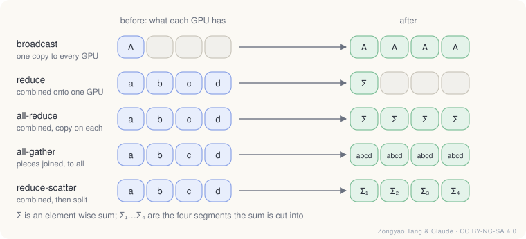
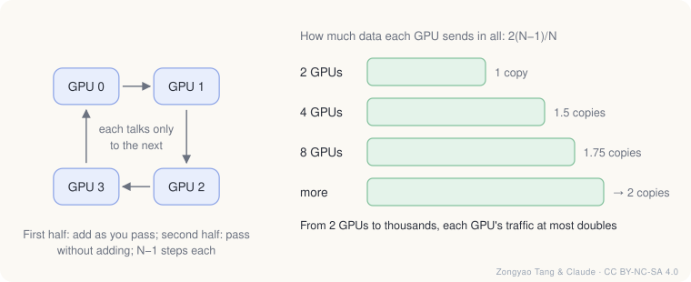
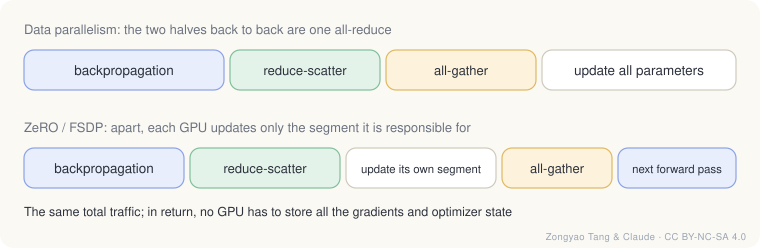
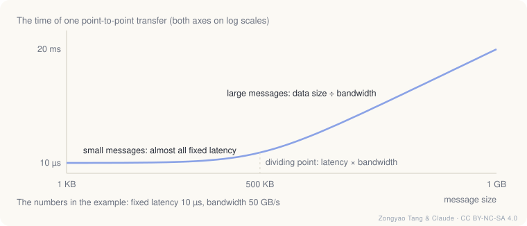

The thread: all communication in distributed training can be described with five "collective" operations → the most important of them, all-reduce, has a clever ring algorithm in which each GPU's traffic stays the same however many GPUs there are → split this algorithm into two halves and you get two other operations, which are the basis of FSDP → finally, a simple formula to estimate how long one communication takes. This unit covers only "what is done and how long it takes"; how NCCL does it inside is left to 6.2.
Part 6 · Collective communication and NCCL6.1 Collective communication and NCCL
Translated by AI (Anthropic's Claude) from the Chinese edition. The Chinese original is the reference.
This unit answersHow do many GPUs exchange data efficiently? What decides how long a communication takes?
Follows part 5: the links are in place, and this unit explains how many GPUs exchange data efficiently over them.
- Five collective primitives are the whole vocabulary of distributed training
- Ring all-reduce: however many GPUs there are, each GPU's traffic barely changes
- all-reduce = reduce-scatter + all-gather
- Communication time = fixed latency + data size ÷ bandwidth
Explanation
1Five collective primitives are the whole vocabulary of distributed training
broadcast: one GPU's data is sent to all GPUs. reduce: all GPUs' data is combined onto one GPU. all-reduce: after combining, every GPU gets the result. all-gather: each GPU contributes a piece, and the pieces are assembled into a whole that every GPU receives. reduce-scatter: after combining, the result is cut up and each GPU takes only the segment it is responsible for.

The five operations on four GPUs "Collective" is in contrast to "point-to-point": not one GPU sending to another, but a group of GPUs doing one thing together. Say there are N GPUs, each holding a block of data.
- broadcast: one GPU's data is copied to all GPUs. Use: at the start of training, give every GPU the same initial parameters.
- reduce: combine all GPUs' data element by element (usually by summing), with the result on one GPU.
- all-reduce: the same combining, but every GPU gets a copy of the result. Use: in data parallelism, add up every GPU's gradients; every GPU needs this sum to update its parameters.
- all-gather: each GPU contributes a segment, the segments are assembled into a whole, and every GPU gets the whole. Use: in FSDP each GPU stores only part of the parameters, and before computing a layer, that layer has to be assembled in full.
- reduce-scatter: first combine as in all-reduce, then cut the result into N segments and leave each GPU only the one that belongs to it. Use: in FSDP, after the gradients are summed, each GPU needs only the gradients for "the part of the parameters it is responsible for".
Matching them to later units:
- Data parallelism, DDP (7.1): one all-reduce per step (in practice split by bucket into several).
- FSDP (7.2): one all-gather before each layer's forward pass, one reduce-scatter after its backward pass.
- Tensor parallelism (7.3): all-reduces inside every layer.
So the quickest way to read any distributed training scheme is to ask three things: which collective operation it uses, how many times per step, and how large the data is each time. Knowing these three, together with the time formula at the end of this unit, you can estimate the cost of communication.
NCCL provides exactly these five operations, plus point-to-point send and receive. On the GPU, PyTorch's
torch.distributedcalls it.An analogyLike a meeting: broadcast is the manager sending a notice; reduce is collecting everyone's reports into one person's hands; all-reduce is collecting them and giving everyone a copy; all-gather is everyone handing in one page and the bound volume going to all; reduce-scatter is collecting them and each person taking only the pages they are responsible for.
So understanding a parallel scheme means seeing which kind of communication it uses when: DDP uses all-reduce, FSDP uses all-gather plus reduce-scatter.
Used later in Ring all-reduce: however many GPUs there are, each GPU's traffic barely changesData parallelism: a full copy of the model on every GPU, each taking part of the dataSourcesCUDA for LLMs chapter 10: collective communicationAccelerate: reduce and all-reduce- Of the five operations, all-reduce is used most. The most direct way is for all GPUs to send their data to one GPU, which sums it and sends it back, but that GPU's links become the bottleneck. There is a better way.
2Ring all-reduce: however many GPUs there are, each GPU's traffic barely changes
Arrange N GPUs in a ring and cut the data into N segments. At each step each GPU exchanges only one segment with its neighbour; after 2(N−1) steps every GPU has the complete sum. Each GPU sends and receives about 2(N−1)/N times the data size, never more than 2 times however many GPUs there are.
Arrange N GPUs in a ring, each talking only to the next one. Each GPU cuts its data into N segments.
First half: add as you pass. In the first step, GPU i sends its own segment i to the next GPU. In every step after that, each GPU adds the segment it received to its own matching segment, and sends the result on. Each time a segment passes a GPU, it picks up one more GPU's contribution. After N−1 steps, every segment has gone almost a full circle and includes every GPU's contribution. At this point each GPU holds exactly one segment that is "the complete sum".
Second half: pass without adding. Each GPU sends the segment of complete sum it holds to the next GPU, which stores it and passes it on. After another N−1 steps, every GPU has collected all N segments.

Every link on the ring carries the same load Work out the traffic. At each step each GPU sends one segment, 1/N the size of the data. There are 2(N−1) steps in all, so each GPU sends 2(N−1)/N copies of the data in total:
- 2 GPUs: 1 copy
- 4 GPUs: 1.5 copies
- 8 GPUs: 1.75 copies
- More GPUs: approaching 2 copies, never above
And at every step all GPUs send and receive at the same time, so every link on the ring is working at full load, and no GPU is a bottleneck. So for large data, the time is about 2 × data size ÷ the bandwidth of one link, almost independent of the number of GPUs. This is why it is called "bandwidth-optimal".
Its weakness is the number of steps. Each of the 2(N−1) steps pays a fixed latency (starting a transfer, synchronising). With large data this latency is negligible; with small data and many GPUs (say 1000 GPUs synchronising one tiny tensor), all the time goes on the latency of those two thousand steps. Then a tree-shaped algorithm suits better: its number of steps grows only with the logarithm of the number of GPUs. NCCL chooses automatically by message size and number of GPUs (6.2).
Two ideas from 0.1 appear here: the bottleneck (spread the load over every link so that no single place becomes the narrow point) and fixed costs (with many steps, the fee paid per step starts to show).
Step by step: ring all-reduce on 4 GPUs
Let the data on the 4 GPUs be a, b, c and d, each cut into 4 segments with indices 0 to 3. The goal is for every GPU to get all 4 segments of a+b+c+d.
Step 0 (send). Each GPU sends one segment to the next: GPU 0 sends a0, GPU 1 sends b1, GPU 2 sends c2, GPU 3 sends d3.
Steps 1 and 2 (receive, add, send). Each GPU adds the segment it received to its own copy of the same segment, and sends it on. Take segment 0 as an example:
- After step 0: GPU 1 receives a0 and computes a0+b0.
- After step 1: GPU 2 receives a0+b0 and computes a0+b0+c0.
- After step 2: GPU 3 receives a0+b0+c0, adds d0, and has the complete sum of segment 0.
The other three segments are doing the same at other positions on the ring at the same time. When step 3 finishes, each GPU holds one segment of complete sum. Up to here, it is exactly a reduce-scatter.
Step 3 (receive, add, store, send). Each GPU does its last addition, stores this segment of complete sum in its output, and at the same time sends it to the next GPU.
Steps 4 and 5 (receive, store, send). Each GPU stores the complete segment it received in its output, and passes it on unchanged.
Step 6 (receive). Each GPU receives the last segment and stores it. Done. This second half is exactly an all-gather.
That is 2×4−1 = 7 steps in all. Demystifying NCCL lists the operation each step corresponds to in NCCL's source, and the names say directly what they do:
- Step 0:
send - The accumulating steps in the middle:
recvReduceSend(receive, combine, send) - The turning step:
recvReduceCopySend(receive, combine, store a copy, send) - The second half:
recvCopySend(receive, store, send) - The last step:
recv
When reading the ring implementation of all-reduce in NCCL's source, these few calls in this order are what you see.
An analogyLike passing notes round a circle: each round, everyone swaps one small slip with the person beside them, and after going round twice everyone holds the whole class's totals.
So the time of a large all-reduce is about 2 × data size ÷ link bandwidth, essentially independent of the number of GPUs; with many GPUs and small messages, the latency of the many steps dominates, and NCCL switches to algorithms such as tree.
Used later in all-reduce = reduce-scatter + all-gatherCommunication time = fixed latency + data size ÷ bandwidthMost of the work is done once at initialisation: probe the topology, build rings and trees, connect every pair of GPUsThe algorithm decides how data travels between GPUs: the ring has the best bandwidth, the tree the fewest stepsSourcesAccelerate ring all-reduceCUDA for LLMs chapter 10: AllReduce- Look closely at the two halves of the ring algorithm: each of them is an operation in its own right.
3all-reduce = reduce-scatter + all-gather
The first half of ring all-reduce's steps does exactly a reduce-scatter: each GPU gets the sum of one segment; the second half is an all-gather: sending each segment to all GPUs.
Look back at the two halves of the previous card:
- At the end of the first half, each GPU holds "one segment of the sum". That is exactly the definition of reduce-scatter: combine, then each GPU takes only its own segment.
- The second half distributes each GPU's segment to all GPUs, until every GPU has the whole. That is exactly the definition of all-gather.
So all-reduce can be seen as these two operations joined end to end. Each half sends (N−1)/N copies of the data, adding up to the 2(N−1)/N of the previous card.

The same two halves, done back to back or apart Why this decomposition matters. Because other work can be inserted between the two halves, even a long time apart.
In data parallelism, gradients go through a full all-reduce because every GPU stores all the parameters and needs all the gradients to update them. But if each GPU is responsible for updating only 1/N of the parameters (the approach of ZeRO and FSDP, 7.2), then:
- Gradients need only a reduce-scatter: each GPU needs only the summed gradients for "the segment of parameters it is responsible for", not the other segments.
- Each GPU uses them to update its own segment of parameters.
- When the next forward pass needs the full parameters, an all-gather assembles the segments.
The total traffic is the same as one all-reduce, but in exchange memory is saved: each GPU no longer needs to store all the gradients and all the optimizer state.
This also explains a detail in 6.3 that is easy to be puzzled by: when measuring bandwidth, all-reduce's correction factor is 2(N−1)/N, while reduce-scatter's and all-gather's is (N−1)/N, exactly half.
An analogyLike a group presentation: first each person totals up one part of the data, then everyone swaps their finished parts with everyone else.
So the two halves can be split apart and other work inserted between them. ZeRO and FSDP (7.2) do exactly this: a reduce-scatter first gets the gradients for "their own segment", only that segment of parameters is updated, and an all-gather assembles them again.
- With the algorithms known, what is needed last is a simple model for estimating time.
4Communication time = fixed latency + data size ÷ bandwidth
Every communication has a start-up latency independent of the data size, plus a transfer time proportional to the data size. For small messages latency takes the larger share; for large messages bandwidth decides everything. NVLink inside a machine and the network across machines can differ in bandwidth by more than ten times.
Write the time of one point-to-point transfer as two terms:
time = fixed latency + data size ÷ bandwidth
- Fixed latency: the part paid however little data there is. Starting a transfer, synchronising state between the two sides, the round trip across the network. On the order of microseconds to tens of microseconds.
- Data size ÷ bandwidth: the time actually spent moving data. The bandwidth is the width of the links in part 5.
Where the dividing point is. The data size at which the two terms are equal = fixed latency × bandwidth. For example, with 10 microseconds of latency and 50 GB/s of bandwidth, the dividing point is 500 KB. For messages much smaller than that, the time is almost all latency, and higher bandwidth does not help; for messages much larger, latency can be ignored.

On either side of the dividing point, different things decide the time For collective communication. One all-reduce consists of many point-to-point steps. With the ring algorithm, N GPUs and data size S:
time ≈ 2(N−1) × fixed latency per step + 2(N−1)/N × S ÷ bandwidth
The first term grows linearly with the number of GPUs; the second barely changes. So large messages are governed by bandwidth, small messages across many GPUs by latency.
Three things it explains.
- Why small tensors are gathered up before sending. A model has hundreds of parameter tensors, many of only a few KB (biases, the parameters of normalisation layers). An all-reduce for each one separately pays the fixed latency hundreds of times. DDP gathers them into buckets of about 25 MB and sends them together (7.1), paying the latency only a few times. Another example of "batch things to spread fixed costs" from 0.1.
- Why bandwidth is measured with large messages. The "bandwidth" measured with small messages is pitifully low; what it really measures is latency. 6.3 explains how to read a complete curve.
- Why parallelism is layered by link. NVLink inside a machine has an order of magnitude more bandwidth than the network across machines (5.1). The same communication takes ten times as long across machines as inside one. So the most frequent communication has to stay inside the machine (7.3).
This model is very rough: it ignores congestion, links being shared, and communication and computation competing for the GPU. The authors of Demystifying NCCL say too that there are so many variables they gave up on an exact formula for the time. But for judging orders of magnitude, and whether to look at latency or bandwidth, it is enough.
An analogyLike sending parcels: every parcel has a fixed time for the paperwork, plus a transport time charged by weight. Send a pile of small items and nearly all the time goes on paperwork.
So small messages should be gathered into large blocks before sending (DDP's gradient buckets do exactly this), and all-reduce bandwidth should be measured with large enough messages; when planning parallelism, the most frequent communication goes on the fastest links (7.3).
Used later in Three protocols: Simple wants bandwidth, LL wants low latency, LL128 gets bothGradient buckets: communicating while the backward pass runsTensor parallelism: cut a matrix multiplication apart, and have several GPUs compute it togetherSourcesCUDA for LLMs chapter 10: the bandwidth gap between interconnects
Putting it together
The five collective operations are the whole vocabulary of distributed training. Ring all-reduce makes each GPU's traffic about 2 times the data, independent of the number of GPUs; its first half is a reduce-scatter, its second half an all-gather. The time of one communication = fixed latency + data size ÷ bandwidth: small messages are governed by latency, large ones by bandwidth, and the bandwidth is that of the links in part 5.
Test yourself
Without looking back at the explanation, say it in your own words.
- What does each of the five collective operations do? Which ones do DDP and FSDP use?
- How is ring all-reduce done? Why does each GPU's traffic barely change as the number of GPUs grows?
- Why is all-reduce = reduce-scatter + all-gather? What is this decomposition good for?
- Which two parts make up the time of one communication? How does this explain "gather small messages up before sending"?